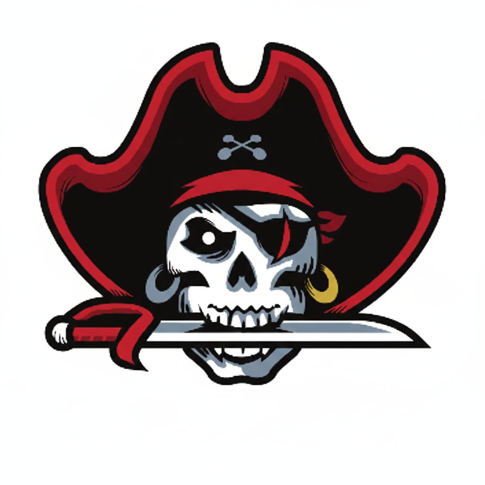
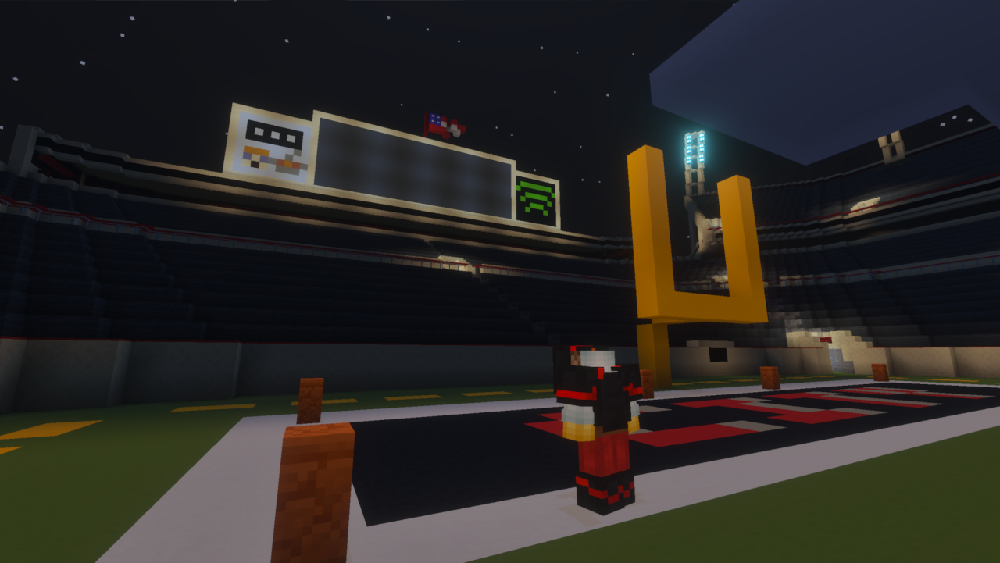
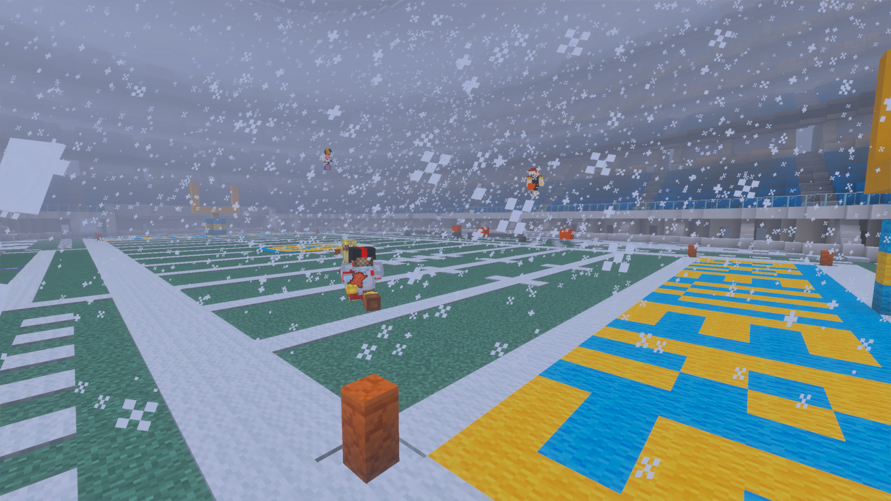

DEFENSIVE PLAYER
OF THE YEAR
Cola City Buccaneers · Mark
01
COLA CITYBUCCANEERS 2026–27 ↗YANKEE FOOTBALL LEAGUE · EST. SEASON 11
A franchise forged in big moments. A city that never backs down. This is Buccaneers football.
Regular season
Seasons competed
Still chasing the breakthrough
Season 20 · New schedule pending
01 / THE FRANCHISE
Every season adds another chapter. From rookie beginnings in Season 11 to the unforgettable moments of Season 20, Cola City is building a legacy one snap at a time.

THE BUCCANEERS WAYFRANCHISE FILE
Founded and led by Mark, the Cola City Buccaneers entered the Yankee Football League as a Season 11 rookie team. The journey has featured rebuilds, breakout campaigns, heartbreak, awards, and a comeback that became franchise lore.
THE GAME IS NEVER OVER
UNTIL THE CLOCK SAYS SO.
THE MIRACLE AT COLA CITY · SEPTEMBER 20, 2026
02 / THE NUMBERS
The record book tells the story: hard lessons, offensive explosions, and a team still writing its future.
| SEASON | RECORD | POINTS FOR | POINTS AGAINST | SEASON NOTE |
|---|---|---|---|---|
| 11 | 7–1 | 209 4TH | 122 3RD | Strong regular-season finish |
| 14 | 1–7 | 243 5TH | 291 | A rebuilding year |
| 15 | 3–5 | 204 | 264 | Mid-table finish |
| 16 | 3–5 | 333 3RD | 326 | High-scoring conference matchups |
| 17 | 5–3 | 256 | 234 | A winning campaign |
| 19 | 3–5 | 291 8TH | 373 14TH | High-scoring volatility |
| 20CURRENT | 0–0 | — | — | Season active · schedule pending |
03 / NEXT UP
The Season 20 schedule is being finalized. Check back here for opponents, kickoff times, and game-day updates.
04 / RECOGNITION
The Buccaneers' impact has reached beyond the scoreboard, with individual honors and a place in YFL history.
Cola City Buccaneers · Mark
01Cola City Buccaneers · Mark
02Cola City Buccaneers · Mark
03Cola City Buccaneers · Mark
04A milestone moment in the Cola City Buccaneers story.

05 / FRANCHISE LORE
SEPTEMBER 20, 2026 · GAME OF A GENERATION
Down 35–59 with just one minute remaining, Cola City pulled off a comeback for the ages. Bryce Young threw six touchdown passes and rushed for two more, while Deestroying delivered three onside kicks, two punts downed at the 1-yard line, and a kickoff-return touchdown.
24-POINT COMEBACK. ONE UNFORGETTABLE FINISH.
06 / FROM THE FRONT OFFICE
Looking back at the rivalry and past meetings in the Cherry Bowl.
The Buccaneers keep the classic look that has represented the franchise since Season 16.
Special teams excellence remains central to the team's identity and Hall of Fame legacy.
An official partnership announcement connecting Mark Julio Tequila and Cola City.
07 / ON THE FIELD
The moments, the atmosphere, the work. A look inside Buccaneers football.
THE STANDARD NEVER CHANGES
BUCCANEERS WIRE